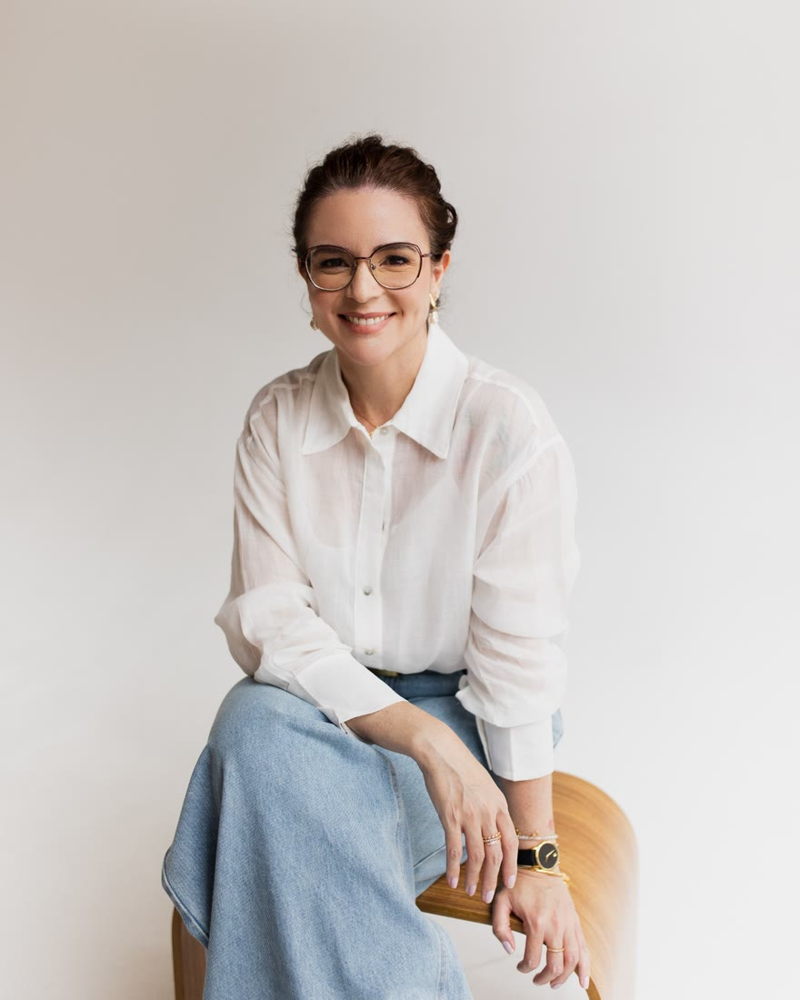
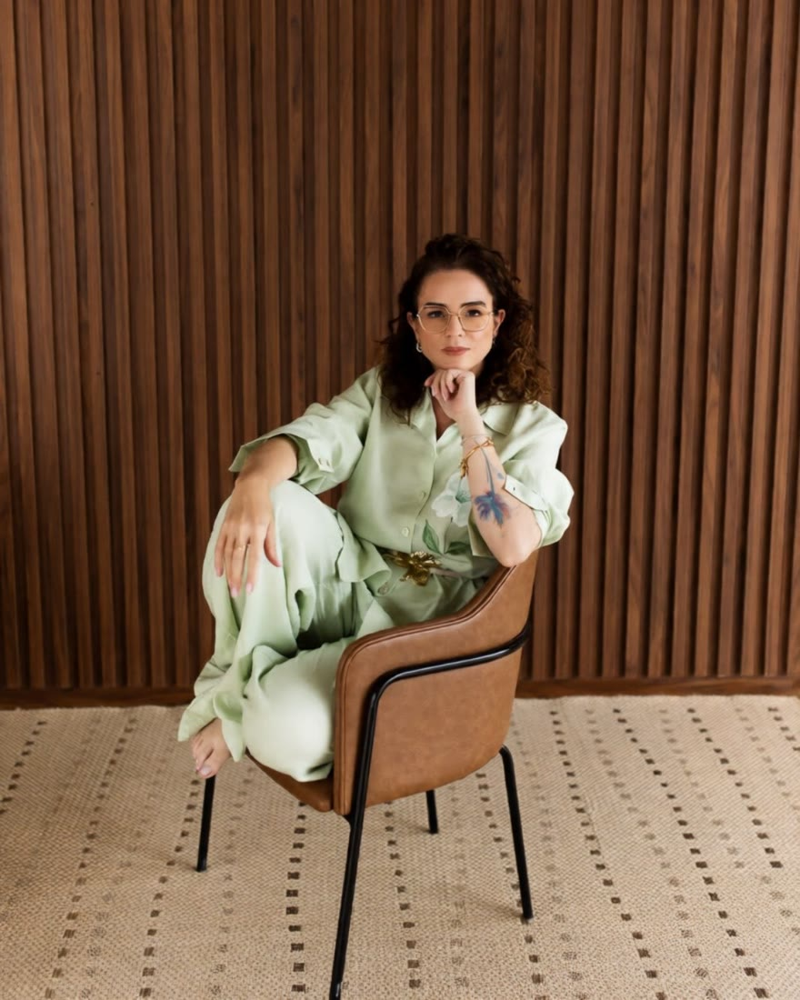

Renata de Oliveira Falco
Renata Falco
Psicóloga e profissional de gestão de pessoas. Duas frentes de trabalho com o mesmo ponto de partida: escutar antes de propor.

01.Psicoterapia
Terapia sistêmica, online, para adultos
- Você sabe quem você é?
- Sabe o que te incomoda, o que te faz bem, o que te deixa feliz?
- Se alguém te perguntasse hoje, você saberia responder?
Essas perguntas parecem simples, mas muitas vezes passamos a vida sem parar para olhar para elas. A psicoterapia é esse espaço de parar, olhar e se reconhecer.
Terapia sistêmica · Online
Um espaço de escuta e cuidado
Para você se conhecer melhor e compreender as relações que fazem parte da sua vida: família, relacionamentos, trabalho, e tudo aquilo que compõe o dia a dia.
São mais de 20 anos de atuação direta em gestão de pessoas, a maior parte em cargos de alta liderança, ao lado de diretorias e executivos, em empresas familiares e multinacionais, grandes e pequenas. Ali aprendi a enxergar o que não aparece no organograma: pessoas competentes respirando fundo no carro antes de entrar, líderes cansados de sustentar tudo sozinhos, equipes inteiras sofrendo com padrões que ninguém conseguia nomear.
Foi nesse lugar que compreendi algo que levo para a clínica há mais de 10 anos.
A dor quase nunca é de uma pessoa só. Ela nasce nas relações, e é também nas relações que encontra caminho.
Por isso, quando você chega, meu primeiro passo é a escuta genuína, para entender por onde você deseja começar. O convite é olhar para onde você está, com quem caminha e o que tem carregado até aqui.
Como funciona
Conheça o processo
Seis pontos para você entender, com calma, como é fazer terapia comigo. Toque em cada um para ler.
01Os sinaisQuando o cansaço pede atenção
A sensação de estar cansado, de ter feito muito e ainda assim produzido pouco. De não conseguir encontrar saída, não conseguir relaxar, descansar, e ainda se sentir culpado por isso.
A ansiedade de domingo à noite. O cansaço que nem as férias resolvem.
Muitas vezes, esses sinais estão pedindo que você olhe com mais atenção para a sua própria vida.
02Uma outra perguntaO olhar da terapia sistêmica
O que há de errado comigo?
Que lugar eu ocupo nas minhas relações, e que padrões repito sem perceber?
Na psicoterapia, a pergunta ganha outro tom, feita com curiosidade e cuidado.
Quando você enxerga um padrão, ele deixa de conduzir a sua vida em silêncio, e a escolha volta para as suas mãos. E quando você muda o seu lugar, as relações ao seu redor também encontram um novo jeito de se organizar.
Autorresponsabilidade, aqui, não é culpa. É reconhecer, com gentileza, o que é seu: o que você sente, o que escolhe e o que deseja mudar.
03Autonomia, não dependênciaO que se constrói é para a vida
Psicoterapia é um lugar de apoio, não de dependência.
Ao longo do processo, eu vou te direcionando para potencializar o despertar de consciência: que você se conheça, se reconheça e entenda o seu modelo mental e os seus padrões, fortalecendo a confiança na sua capacidade de escolher.
O que construímos juntos é para você levar para a vida, não para ficar só na sessão.
04Como é o atendimentoRitmo, frequência e sigilo
Escuta atenta, genuína e sem julgamentos. Um espaço para você chegar como está, com a sua história respeitada, e encontrar acolhimento e honestidade na mesma conversa.
O processo respeita o seu ritmo, a sua história e o seu momento. As sessões são online, com 1 hora de duração, e podem ser semanais, quinzenais ou, quando o momento pede mais cuidado, duas vezes por semana. Essa frequência a gente decide junto.
As sessões seguem o sigilo previsto no Código de Ética Profissional do Psicólogo. Escolha um lugar reservado, onde você possa falar à vontade.
05Para quem éE as demandas que acompanho
Para quem sente esgotamento e sobrecarga, tem dificuldade de colocar limites, percebe padrões que se repetem na família, nos relacionamentos e no trabalho, ou simplesmente sente que se distanciou de si e quer se reencontrar.
Demandas
Atendimento individual, online, para adultos a partir de 18 anos.
06Como agendarDo horário à sessão, em quatro passos
Você escolhe o horário na agenda. O resto a gente combina pelo WhatsApp, com tranquilidade.
- Escolha um horárioNa agenda logo abaixo, entre os horários livres.
- Eu confirmo pelo WhatsAppCom o link da sessão e os dados do PIX.
- Começamos pela sua demandaPara entender o que te traz e combinar como seguimos.
- A frequência é combinada entre nósSemanal, quinzenal ou duas vezes por semana.
Agenda online
Agende a sua sessão
Terapia online, individual, com 1 hora de duração. Pagamento via PIX, depois da confirmação.
Horário de Brasília
Sessão de terapia online · 1 hora
Escolha um dia e um horário
Renata de Oliveira Falco · CRP 09|7780
A mensagem já vai pronta, só com o dia e o horário. Eu confirmo a vaga e envio o link da sessão e os dados do PIX.
Se essas perguntas fizeram sentido para você, talvez seja o momento de buscar as suas respostas.
A gente começa pelo que está presente hoje, no seu tempo.
Agende sua sessão02.Gestão de pessoas
Elevare Soluções em Gestão
- Rotatividade. Afastamentos. Conflitos entre áreas.
- Lideranças que sabem o que fazer e não conseguem praticar.
- Treinamento entregue, resultado que não aparece.
Quase sempre, o que trava a entrega não está no organograma. Está nas relações, nos papéis e no que ninguém consegue nomear. É por aí que a Elevare começa.
Elevare · Soluções em gestão
Diagnóstico preciso, desenvolvimento com método.
Olhar sistêmico e estratégico, com essência humana. Uma equipe também é um sistema, e o diagnóstico mostra onde lideranças, fluxos e relações pedem ajuste.


Cada trabalho é alinhado, conduzido e ajustado a partir da realidade do cliente. Primeiro vem a análise de cenário, detalhada e sistêmica. Depois, a solução desenhada para aquela demanda, e não um pacote pronto.
Sensibilizar antes de ensinar. Conscientizar antes de cobrar.
É o princípio que orienta cada projeto: criar as condições para que o conhecimento já adquirido vire comportamento observável no dia a dia, e resultado percebido por quem está do outro lado.
Soluções
Como a Elevare atua
Seis pontos para entender o que a Elevare entrega e como cada projeto acontece. Toque em cada um para ler.
01Diagnóstico organizacionalÉ por ele que todo trabalho começa
Leitura analítica do cenário, das pessoas e dos processos, para entender a demanda real antes de propor qualquer solução.
Inclui alinhamento com a diretoria, escuta das lideranças e análise da cultura e do clima organizacional.
Ao final, uma devolutiva com percepções, pontos de atenção e recomendações de continuidade.
02Mentoria estratégicaComportamento, liderança e carreira
Individual, para profissionais e lideranças em momento de decisão, transição ou ampliação de responsabilidade.
O trabalho parte do autoconhecimento: clareza sobre potenciais, limitações e sobre os motivos pelos quais você reage de determinada forma. Com isso, a conduta fica mais estratégica, o desgaste emocional diminui e o posicionamento ganha segurança.
03Lideranças e equipesDo saber ao fazer
Programas vivenciais desenhados para a demanda da empresa, com prática entre os encontros.
- SensibilizaçãoTocar o que move cada profissional e trazer à tona o que hoje impede a entrega.
- ConscientizaçãoTornar visível o papel de cada um no resultado coletivo.
- Compromisso e práticaTransformar percepção em ação, com acordos individuais e de equipe.
- Efeito cascataA liderança vive o processo primeiro e chega às equipes como exemplo.
04Palestras e workshopsTemas que movem pessoas e resultados
Encontros para lideranças e equipes, com linguagem prática e exemplos da rotina da empresa.
05O métodoTrês referências em todo projeto
Cada pessoa se torna agente de mudança quando enxerga a si, ao outro e ao contexto.
- AutopercepçãoEvidências que fortalecem a autorresponsabilidade.
- Percepção do outroRelações profissionais respeitosas e sustentáveis.
- Análise de cenárioPontos críticos e potenciais, sob o olhar da cultura organizacional.
06Como contratarDa conversa inicial à devolutiva
Todo projeto começa por uma conversa para entender a demanda. A proposta vem depois, desenhada para ela.
- Conversa inicialPelo WhatsApp, para entender o contexto.
- Alinhamento e escutaCom quem decide e com quem vive a rotina.
- Proposta personalizadaEscopo, formato, cronograma e entregáveis.
- Condução e devolutivaCom relatório e recomendações de continuidade.
Todo o processo é sigiloso e confidencial, com acordo de não divulgação quando a empresa preferir.
Experiência em
- Varejo
- Indústria
- Serviços
- Agronegócio
- Investimentos
- Advocacia
- Franquias
- Distribuição de medicamentos
- Tecnologia
- Cooperativismo
Formação
- Mentoria estratégica · Creative Learning Institute
- Professional & Executive Coach · SLAC
- XXIV CEPE, Ciclo de Estudos Políticos e Estratégicos · ADESG (Associação dos Diplomados da Escola Superior de Guerra), Delegacia em Goiás
Todo trabalho começa por entender a demanda real.
Para empresas e para profissionais que querem crescer com clareza e método.
Depoimentos
Palavras que recebi pelo caminho
Trechos de mensagens enviadas espontaneamente, publicados com autorização e sem identificação.
Muito do profissional que me tornei nasceu daquilo que aprendi observando o seu exemplo. Sua postura, seus ensinamentos e a forma como conduzia o trabalho foram fundamentais para a construção da minha trajetória.
Você foi um dos primeiros e mais importantes exemplos e inspiração que tive. Importante você saber que fez parte da minha base de formação… e eu sou muito grata.
Você é uma das poucas pessoas que me sinto acolhida! […] Você me dá segurança!
Mais uma vez, muito obrigada, obrigada mesmo por isso tudo. Vejo uma evolução gritante em tão pouco tempo, de uma vida inteira…
Você é maravilhosa demais em minha vida. Eu quero poder potencializar isso para a humanidade…
Você é uma profissional excepcional. […] Quem teve e tem a oportunidade de trabalhar com você é muito privilegiado. Sou muito grata por todos os ensinamentos e por tudo que aprendi durante aquele período.
Tive a oportunidade de ser liderada por você e, sem dúvida, uma das coisas que mais levei dessa experiência foi a importância de me posicionar. Aprendi que se posicionar não significa confrontar, mas ter coragem para falar, questionar, trazer pontos de vista diferentes e sustentar aquilo em que acreditamos, sempre com respeito e responsabilidade. […] Esse foi um aprendizado que carrego comigo até hoje.

Sobre
Conheço o trabalho pelo olhar de quem o vive
Mais de 20 anos em gestão de pessoas, em empresas de perfil multinacional a familiar, no varejo, na indústria e em serviços.
Minha atuação principal é em desenvolvimento organizacional e gestão estratégica e sistêmica de pessoas e processos. Também tenho vivência na implantação de governança, compliance e gestão de riscos, o que amplia a minha visão sobre a empresa como um todo.
- Formada em Psicologia pela PUC Goiás
- Psicóloga · CRP 09|7780
- Terapia sistêmica
- Trajetória completa no LinkedIn